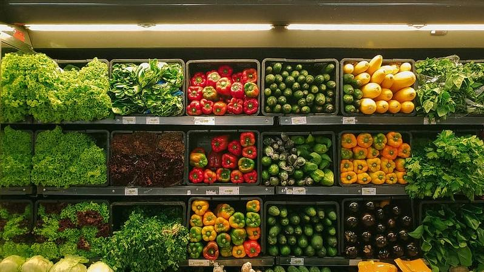

Challenges
- Rampant price risk, asymmetric demand responses, distribution roadblocks, and credit payments plague farmers.
- High price volatility and low-graded produce force resellers to constantly hunt and compete for quality supplies.
- The fragmented fresh produce industry suffers astronomical food waste due to inefficient old-school transactional practices.

Solutions
- Smart analytics help regulate prices and bar market manipulators from taking advantage of the farmers
- Overhauling the inefficient supply chain infrastructure with a holistic data-driven approach
- Hence facilitating fair prices to both the farmers and resellers at every step of the value chain.
- Data driven procurement based on pre order minimum storage time enables almost zero wastage.
The ShobjiGram Blueprint
Moving forward
ShobjiGram dreams to build the backbone of a resilient fresh produce supply chain with the most proactive AI-enabled platform. A dream that will translate to empowering farmers, revitalizing businesses, and replenishing kitchens.
We are focused on making the ShobjiGram innovation more accessible to the most fragmented parts of society. From small steps to bigger strides, we will steadfastly endeavor to utilize all our resources in bridging the widest supply chain gaps.
Empowering Farmers to Revitalize Last Mile Logistics
#EmpoweringFarmers with Tech and more.
From day 1, ShobjiGram has been living up to our name, by working closely with the smallholders, homesteaders, and generational farmers to overhaul the straggling fresh produce supply chain.
Powered by precision agriculture, ShobjiGram offers smallholders a risk-averse contract farming opportunity.
Furthermore, our commitment to improving the livelihood of the hands that feed us spans to speaking the language of farming. It involves trading modern agriculture ideologies with traditional harvest practices.
The Face Behind Our Success

Muntasir Hafiz
Founder & CEO
More than 8 years of white collar experience in Information Technology.
Specialized in managing complex operations and large teams in challenging and mission-critical scenario
The ShobjiGram USP
Small initiatives, ensuring long-term benefits
As Bangladeshesh's fastest AI-backed fresh produce aggregator, we are directly sourcing from smallholders and moving it across municipal wet markets and supermarkets of Dhaka within 6 hours.
Get fresh deliveries every day.
Transcend the fresh produce supply chain.